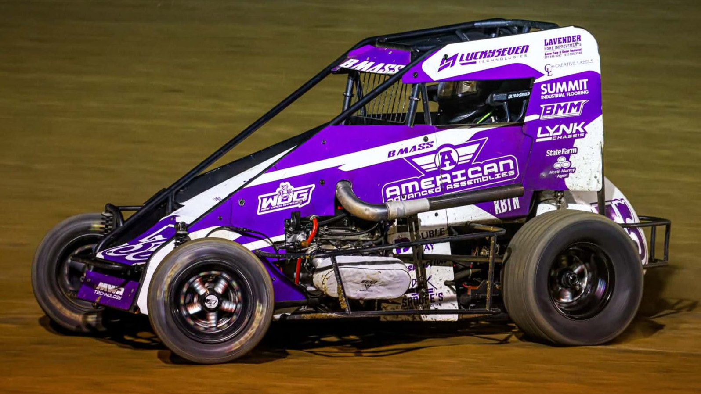

Bryce Massingill Wins Five of Last Eight to Extend USAC Midwest Thunder Midget Win Record to 23
The Troy, Ohio, driver ended a 364-day winless stretch on July 31 and finished second to Tyler Nelson in the points, 40 behind, in the family-owned No. 35.

Bryce Massingill of Troy, Ohio, closed the 2026 USAC Midwest Thunder SpeeD2 Midget season on Oct. 3 at Montpelier Speedway in Indiana with his fifth victory of the year and the 23rd of his career, extending his own series record, USAC reported. He started ninth, passed Buddy Hollmeyer for the lead on lap 22 of the 25-lap feature and won by 0.473 seconds over Jakeb Boxell. Tyler Nelson finished fifth that night and won his second straight series championship with 941 points to Massingill’s 901, a 40-point margin. USAC said Massingill spent the early part of that day bowling; he is a member of the University of Northwestern Ohio bowling team, which listed him on its 2025-26 men’s roster.
The late run followed a long gap. Massingill’s previous win had come Aug. 1, 2025, at Moler Raceway Park, and USAC said he went 364 days without a victory before returning to Moler on July 31, 2026. Starting second, he led all 25 laps for his 19th series win. He led every lap again the next month, on Aug. 28 at Moler, where he won by 1.380 seconds for his 20th, and on Aug. 29 at Millstream Speedway in Findlay, Ohio, where he won from the pole by 3.217 seconds for his 21st. On Sept. 18 at Circle City Raceway in Indianapolis he started eighth, passed Stratton Briggs on lap 12 and won by 1.115 seconds for his 22nd, which put him four points ahead of Nelson with two races left.
The next night at Lincoln Park Speedway in Putnamville, Ind., a throttle sensor problem on the parade lap kept Massingill from taking the green flag. He was scored 24th, and Nelson won the race to take the points lead, leaving Massingill third and 46 points back, USAC reported. The Montpelier win moved him to second in the final standings. USAC’s season review credits him with a series-high five wins and 96 laps led, and with 10 top-five finishes and seven heat race wins, both matching Nelson’s totals. Massingill has finished in the top three of the standings six years in a row: third in 2021, second in 2022 and 2023, first in 2024, third in 2025 and second in 2026.
Massingill made his Midwest Thunder debut in 2019, according to USAC. He won the 2024 championship at age 19 with 699 points, two wins and a top-10 finish in all 12 of his feature starts, in the family-owned No. 35 Boss Chassis with a General Motors Ecotec engine and his father, Jason Massingill, as crew chief. USAC said he held a 22-point lead when he left for the BC39 at The Dirt Track at IMS with Chase McDermand’s USAC National Midget team, and that rain then canceled the final two Midwest Thunder races, at Moler and Atomic Speedway, with no makeup date, so he was declared champion. He had finished second in 2022 and 2023 by a combined 29 points.
In 2025 Massingill finished third in points with three wins. USAC said the 16th of them, in the Mike Streicher Memorial at Limaland Motorsports Park, made him the winningest driver in series history. He added victories at Fremont Speedway and Moler that year, and USAC’s 2026 review lists him as the series’ all-time leader with 23. The final 2026 top five was Nelson, Massingill, Lux (886), Creager (798) and Briggs (772).